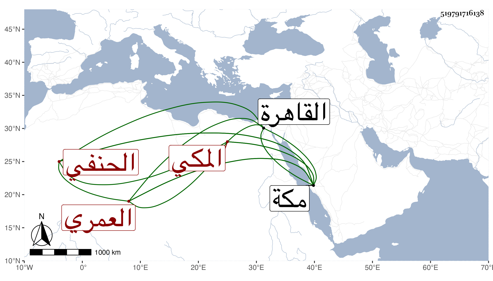

0902Sakhawi.DawLamic.ITO20230111-ara1.EIS1600.519791716138
Biography ID: 519791716138
262
أحمد بن محمد بن أحمد بن محمد بن محمد بن سعيد الشهاب بن البهاء أبي البقاء بن الشهاب أبي الخير بن الضياء العمري المكي الحنفي شقيق الجمالي محمد الآتي ويعرف كسلفه بابن الضياء . ولد في ليلة الأحد تاسع ربيع الأول سنة إحدى وثلاثين وثمانمائة بمكة وناب عن أخيه ودخل القاهرة غير مرة ونسب إليه ما لا أثبته . مات في ليلة السبت خامس عشر ذي الحجة سنة اثنتين وسبعين بمكة . أرخه ابن فهد .
